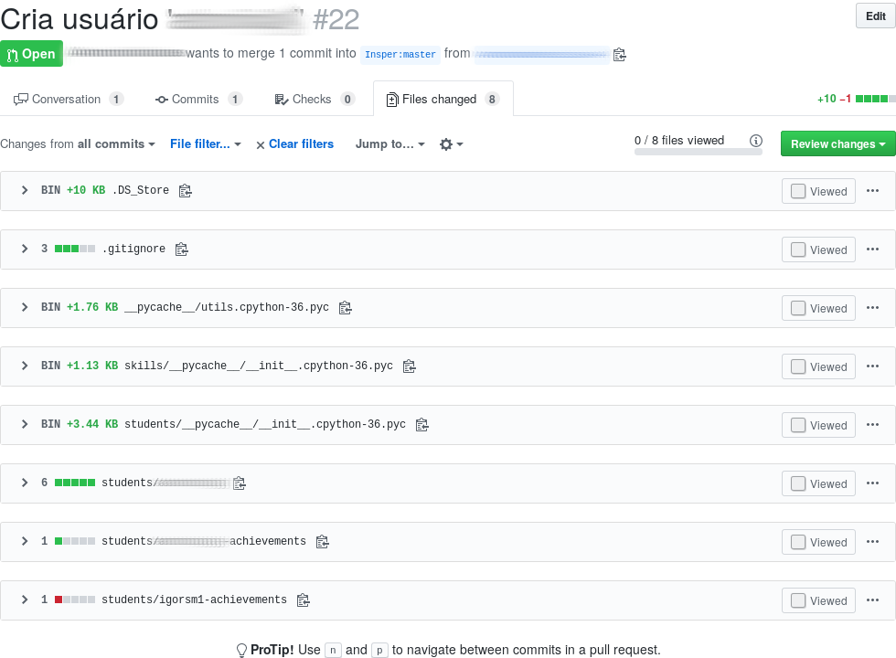
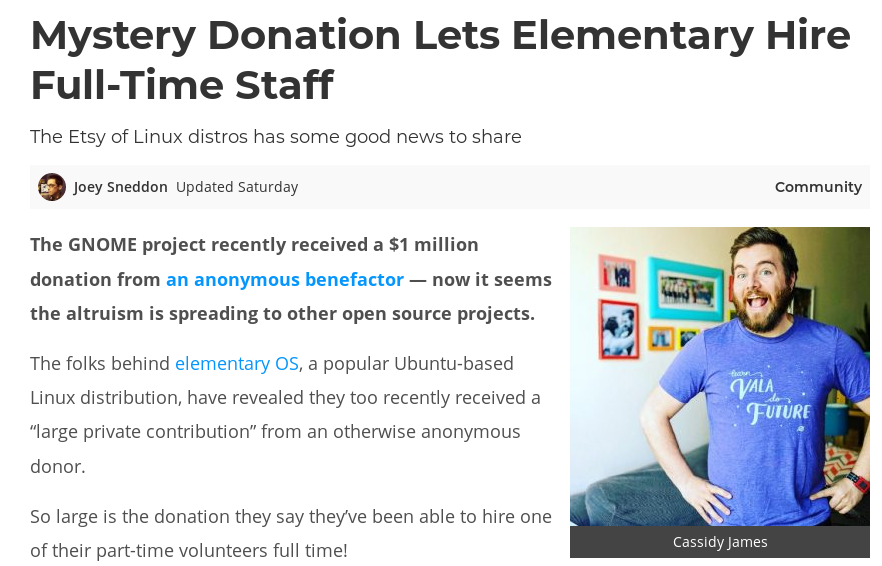

Open Source Development

Software and Communities
2024/2: Fabricio Barth ( fabriciojb@insper.edu.br) )
Github Model: fork + pull request

Source: https://www.slideshare.net/abderrahmanebenbachir/continuous-integration-in-github
Github Model: fork + pull request

Source: https://www.slideshare.net/abderrahmanebenbachir/continuous-integration-in-github
Workflow: other models
- Send patch via email list (e.g., Linux)
- Patch is attached to the Bug Tracker (e.g., Haiku, KDE)
- Does not receive external contributions
Review of last class's PRs
Common Errors
Error 0: login-achievements file has errors

Error: The date of the commit is incorrect, for example. Then, when we run the command python dev-aberto.py compute-grade <user> the result is not as expected.
How to fix: Create a new commit with the correct content.
Error 1: Extra files in the PR
Error: Modifying files not related to your proposed changes.
Ideal:
- A Pull Request should contain only the files related to the proposed modification.
- Each proposed modification is in a separate Pull Request.

Error 1: Extra files in the PR
How to fix: git rm --cached <file> removes the file from the repository, but keeps it in the working directory.
How to fix: git revert <commit_id> creates a commit that undoes the changes made by commit_id.
.svg?cdnVersion=501)
Extra options:
--no-commit: Only adds the modifications, but does not make the commit. Allows undoing part of a commit.
Source: https://www.atlassian.com/git/tutorials/
Error 2: Non-descriptive commit messages

How to fix: git commit --amend allows modifying the last commit made.
Error 3: Pull Request with a poor description

How to fix: Simply edit it in the Github interface.
Not all students enrolled in the course did the activity from the last class!
python dev-aberto.py list-users
Please, do it as soon as possible!
Software Communities
Discussion
Question 1: What are the software you use the most in your daily life?
Question 2: Who is the main developer of the project?
Question 3: How do you think the project is funded?
Example: Linux Kernel

Foundation supports the development of the Linux Kernel and the creation of an open-source software ecosystem around it.
Support:
- Financial
- Intellectual property
- Infrastructure
- Services and training
Example: Linux Kernel
Companies that sponsor development:
- Individual (11.95%)
- Intel (10.01%)
- Red Hat (8.90%)
- Unknown (4.09%)
- IBM (3.79%)
- SUSE (3.49%)
- Linaro (2.96%)
- Consultants (2.96%)
- Google (2.79%)
- Samsung (2.28%)
Source: "2020 Linux Kernel Development Report"
Example: Ubuntu

Private company controls the development of Ubuntu. Obtains resources via:
- Donations
- Development and consulting services
- Training
Example: Gitlab

Company funded so far by VC (Venture Capital) in search of profit.
- Option of free plans with open-source software
- Option of corporate plans with more features and support
- On-premises installations
Example: Elementary

Linux distribution led by a "tiny" company focused on the user experience. Resources are obtained through:
- Individual and corporate sponsorships
- Pay-what-you-want model (app store and operating system)
- Hardware with the pre-installed system

Reasons for funding (company)
- "Acquire" experts in a technology
- Sell support or consulting services
- Marketing
Reasons for contributing (individual)
- Professional
- Reputation / CV
- Business needs
- Personal
- Altruism / Ideology
- Sense of personal fulfillment
- Exercise creativity
- Solve a problem of personal interest
Activity: Exploring the environment of a project

- Research how the communities of some projects are organized
- Produce a presentation summarizing your findings